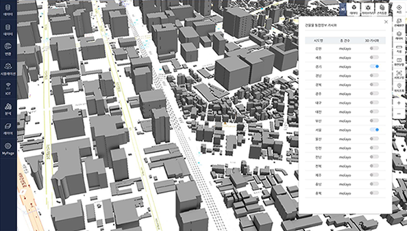
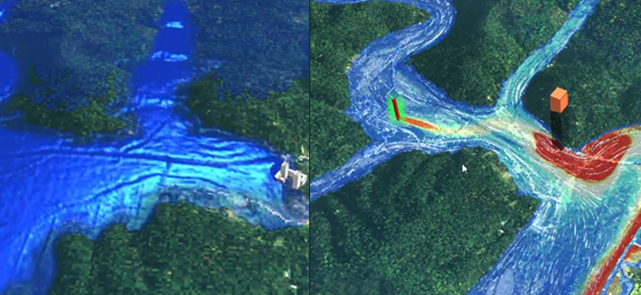
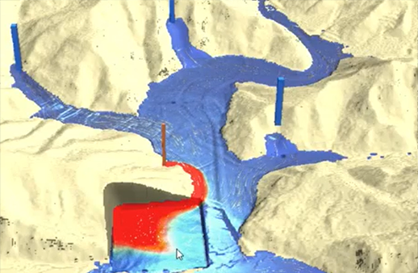

데이터 자동변환
citygml, indoorgml, ifc, 3ds, obj, collada(dae) 등 다양한 종류의 3D 데이터를 웹 브라우저가 가시화 할 수 있는 포맷으로 변경해 주는 기능입니다.
사용자가 자신이 소유하고 있는 3D 파일을 업로드 하고 변환에 필요한 옵션을 선택 후 변환 버튼을 클릭하면,
3D 파일이 자동으로 변환되어 웹 페이지에 가시화되어 표출됩니다.
| 스마트 타일 |
|
|---|---|
| F4D Converter |
|
| Terrain |
|
3D 지원 포맷
| Format | Description | Extension |
|---|---|---|
| IFC(Industry Foundation Classes) | 건축 BIM 정보 교환을 위한 표준 포맷 | ifc |
| 3DS(3D Studio File Format) | AutoDesk의 3D Studio에서 사용되는 파일 포맷 | 3ds |
| OBJ(Wavefront File Format Specification) | 3차원 좌표 (다각형 선과 점), 텍스쳐 매핑 및 기타 오브젝트 정보를 포함하는 3차원 파일 포맷 | obj |
| COLLADA(COLLAborative Design Activity) | 3D 자료를 교환하기 위한 XML 스키마 기반의 개방형 표준 포맷 | dae |
| GML(Geography Markup Language) XML(eXtensible Markup Language) CityGML(City Geography Markup Language) |
OGC(Open Geospatial Consortium)에서 개발한 XML 기반 지리 정보를 교환, 저장하기 위한 정보 모델 기술 언어 | gml, xml, citygml |
| LAS(LASer) point cloud format | ASPRS(American Society for Photogrammetry and Remote Sensing)에서 지정된 공개 바이너리 포맷으로, Lidar 포인트 클라우드 데이터의 교환, 저장을 위해 설계된 파일 포맷 | las |
| JT(Jupiter Tessellation) | Siemens PLM Software 에서 개발된 경량화 3D 모델 포맷 | jt |
디지털트윈 시뮬레이션
mago3D 플랫폼에서는 Rule-Base Management System 을 이용하여 3D 라이브러리, Extrusion Building , Wind Simulation,
Water Simulation, land slide simulation 등 다양한 시뮬레이션을 지원합니다.
또한, Rule기반, 2D/3D 데이터 속성관리를 통한 확장성 및 유지보수가 용이합니다.

3D 라이브러리
3D 라이브러리는 가로수, 가로등, 교량 등 3D 데이터를 이용한 심시티(SimCity) 시뮬레이션 기능을 제공 합니다. 점(point) , 선(line) 형태로 3D 라이브러리를 원하는 위치(Point)에 배치할 수 있습니다.(활용 사례: 가로경관, 야간조명, 수목 배치 시뮬레이션 등)

Extrusion Building
Extrusion Building은 국토교통부에서 제공하는 건물통합마스터데이터(2D Shape)를 바탕으로 3D 빌딩을 가시화합니다.

Wind Simulation
Wind Simulation은 바람장 모델 데이터 (Grib, Hdf 등)를 후처리를 통해 Geojson + PNG로 생성하여 가시화합니다.활용 사례는 나노웨더의 DEM/DSM 자료를 활용하여 상세화 한 수치모델 알파멧(AlphaMet)의 바람장을 mago3D에 표출하였습니다.

Water Simulation
Water Simulation은 수리/수문, 수질 모델링 시뮬레이션 가시화 활용 사례는 오폐수나 기름 유출 가시화할 수 있습니다.
Landslide Simulation
Landslide Simulation은 산사태 모델링 시뮬레이션 가시화합니다.실시간 센서 데이터 (IoT)
mago3D 는 실시간 시뮬레이션 센서 데이터를 연동, 가시화 하기 위한 다양한 방법을 제공합니다.
가장 대표적인 방법은 OGC 표준 스펙인 SensorThings API 를 연동한 형태입니다.
SensorThing API 를 이용하여 데이터를 저장, 관리, REST API를 통해 데이터를 불러온 후 mago3D JS 가시화 엔진을 이용해서 가시화 합니다.
OGC 표준 SensorThings API 사용
웹을 통해 사물 인터넷 장치, 데이터 및 응용 프로그램을 상호 연결하기 위한 OGC(국제 표준 기구) 표준 스펙입니다.
OGC SensorThings API Part1
OGC SensorThings API Part2

실시간 건물 재실자 데이터 표출
실시간 센서 데이터는 현재의 상황을 바로바로 사용자에게 알려줄 수 있기 때문에 디지털 트윈에서 중요한 역할을 가지게 됩니다.데모 페이지에 있는 재실자 센싱 데이터는 10분마다 랜덤하게 만들어집니다.

실시간 대기질 데이터 표출(AirKorea OpenAPI)
대기질 실시간 데이터는 AirKorea OpenAPI를 연동하여 사용합니다.에어코리아에서 제공 받은 실시간 데이터는 mago3D 플랫폼 상에서 자동으로 처리됩니다. mago3D는 사용자에게 최적의 해답을 제공할 준비가 되어 있습니다.
ⓒ Copyrighst All rights reserved.
가이아쓰리디㈜
서울 금천구 벚꽃로 278 SJ테크노빌 702호
T. 02 3397 3475 F. 02 6767 0979
info@gaia3d.com
T. 02 3397 3475 F. 02 6767 0979
info@gaia3d.com
- About
- 개요
- 특징
- 흐름도
- 적용분야
- 미래
- Product
- CE/EE
- 아키텍쳐
- 구성요소
- 다운로드
- 제품사양서
- 가격정책
- Tech
- 자동변환
- 시뮬레이션
- 센서데이터
- Demo
- 건축/건물/시설물
- 조선/항만/해양
- 환경
- 교통/항공
- 국방/기터
- Support
- 설치가이드
- 사용자가이드
- FAQ
- Contact